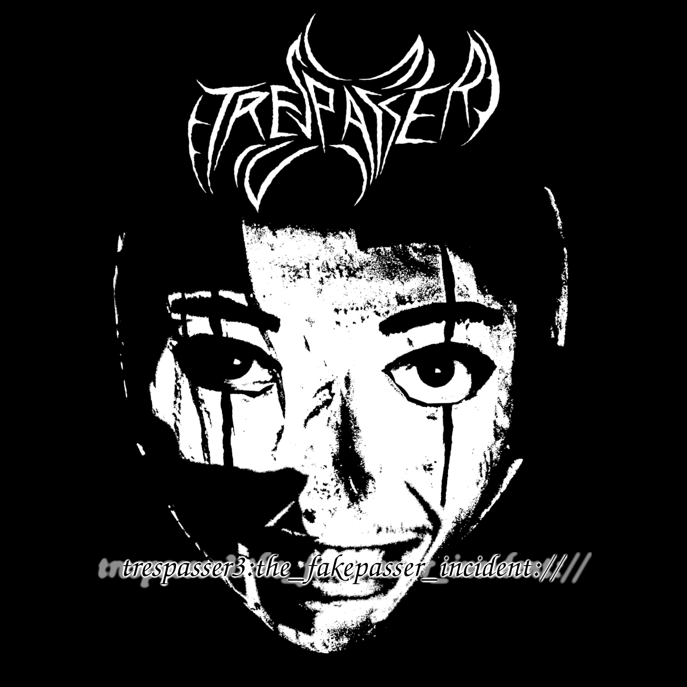

THIS IS A BIT MORE OF A LOOK INTO TRESPASSER SONGS,
MEANINGS AND ALL OF THE GOOD STUFF.
HERE I PROVIDE COMMENTARY ABOUT HOW THE SONGS WERE MADE,
THE STUFF USED IN THEM AND OTHER RANDOM FACTS.///
THIS WAS MY FIRST ATTEMPT AT PRODUCING AN EP. I HAD MADE
SONGS AND ALBUMS BEFORE, BUT I NEVER REALLY TRIED TO MAKE THEM GOOD.
WHEN I RELEASED THIS, I HAD VERY LITTLE EXPERIENCE IN THE MUSIC WORLD.
SURE, I HAD DONE MUSIC BUT I HAD NEVER REALLY MADE ANYTHING
WORTH LISTENING TO, AND YOU CAN TELL HERE. THE COVER IS A PHOTO
OF A FRIEND OF MINE. SHE THINKS IT SUCKS, IT DOESN'T.
THE FIRST SONG I TRIED TO PRODUCE FULLY. I DIDN'T KNOW WHAT
TO REALLY DO WITH THE EP, SO I FIGURED I WOULD MAKE SOME
NU-METAL STUFF, LIKE SNOT [WHO I RESPECT DEEPLY].
I TRIED TO RECORD GUITAR WITH MY PHONE AGAINST THE AMP [DOESN'T WORK]
WHICH IS WHY ALL THE GUITAR HERE SOUNDS SLOPPY.
THE LYRICS ARE A LOT OF JUST ME WHINING ABOUT THE WORLD
AND MY PLACE IN IT. ENOUGH SAID.
THE SECOND SONG I MADE. THIS IS MEANT TO BE A SORT OF PAUSE IN THE MUSIC.
I USED A TB-303 KNOCKOFF FOR THE LEAD WHICH SOUNDED DOPE,
THE REST IS A MIX OF 808 AND 909 SAMPLES AND
A TRIPLE OSCILLATOR BASS I LOVE TO BITS. NOT A LOT TO MENTION HERE.
IF YOU CAN'T TELL, I LOVE BREAKCORE, JUNGLE AND DNB. I WANTED TO INCLUDE
SOME ON THIS DEBUT EP SO THIS WAS BORN. I SERIOUSLY DO NOT
KNOW WHY I DID THIS, BUT THE SONG IS ABOUT AI GIRLFRIENDS
AND SOME OTHER RELATIONSHIP BS. IT WAS ROUGH FOR ME AROUND THIS TIME.
EVERYTIME I HEAR THIS SONG I WANT TO RIP MY EARS OFF. IT SUCKS.
I DO NOT KNOW WHY I TRIED TO DO VOCALS LIKE THAT BUT I REGRET IT NOW.
OH WELL, EVERYONE HAS HIGHS AND LOWS, THIS IS JUST A GIANT LOW.
IT DOESN'T EVEN HAVE A MEANING TO GO OFF. 9/11 FOR THE EARS.

THE SECOND [AND ARGUABLY BEST] TRESPASSER EP OUT OF THE FIRST 4.
I LOVE MOST OF THIS ALBUM. THE COVER IS A HEAVILY EDITED IMAGE OF A FOREST
NEARBY, WITH SOME DOODLES OVER IT. I FIND THE BREAKCORE
AND MORE IDM ELEMENTS OF THIS ONE MAKE IT STAND OUT,
ALONGSIDE ITS MELODIC APPROACH. I LIKE THIS ONE.
PERHAPS THE MOST BREAKCORE SONG I'VE EVER MADE.
THE VERSE CHORDS ARE TAKEN FROM A SUPER OLD SONG I DID BECAUSE
I FIGURED IT WOULD WORK BETTER. THE ONLY TRESPASSER SONG I
HAVE EVER USED AN EXTERNAL VST ON; MY DIPSHIT LAPTOP WON'T RUN THEM [4GB RAM].
THIS SONG IS A MIXED BAG FOR ME. IT WAS ORIGINALLY
PACKAGED ALONG A TON OF DIFFERENT SONGS UNTIL I DECIDED THEY ALL SUCKED
AND SCRAPPED MOST OF THEM. I DO QUITE LIKE MY DRED BASSES HERE,
AND THE SONG OVERALL HAS EXCELLENT ATMOSPHERE.
THE BEST SONG ON THE EP. I ADORE THE MELODY AND MY USE OF A
SLOWED-DOWN AMEN BREAK. IT IS EAR CANDY TO ME. NOT TO MENTION
THE MENTAL DRUM PATTERNS I MADE ON THIS. THERE'S A REASON
I NAMED THE EP AFTER THIS SONG SPECIFICALLY, BESIDES HOW COOL IT SOUNDS.
A MIXED BAG. THIS SONG IS ABOUT MY HATRED OF BANDS THAT DON'T DO ANYTHING NEW.
I LIKE THE CONCEPT OF THIS SONG, AND THINK FOR WHAT IT'S WORTH,
MY VOCALS AREN'T THE WORST THING IN THE WORLD. HOWEVER,
THERE IS NO BASS FOR SOME REASON. I DON'T KNOW WHY I DID THIS.

A VERY GOOD EP IN MY EYES. NO GUITAR, ALL SYNTHS AND MIXED SEMI-DECENTLY.
I TRIED THE HARDEST HERE TO LEARN HOW TO MIX AND SHIT.
I FIND MYSELF LISTENING TO THIS WHEN I'M ON THE TRAIN AT NIGHT.
VERY CALMING, BUT ALSO KINDA HOSTILE SOUNDING?
I'LL BE HONEST, THIS SONG IS KINDA FILLER. IT WAS GONNA BE DONE ON AN
ACOUSTIC GUITAR, BUT I WANTED MORE SYNTHS [ALSO STARTED
LISTENING TO SKRILLEX AROUND THEN] SO THAT MADE IT THIS.
I COULD TAKE OR LEAVE THIS SONG OVERALL, IT EASES YOU INTO THE EP.
THIS SONG IS ABOUT A PARASOCIAL RELATIONSHIP. NOT SAYING WHAT.
IT IS A VERY UPSETTING SONG TO ME, WHICH IS WHY I LOVE IT. IT HAS SOME
INSANE ATMOSPHERE AND I ADORE IT, ESPECIALLY
THE BASS I MADE FOR IT. I LOVE THE MOANING BASS.
THIS SONG REPRESENTS A FIGHT. IT IS ADRENALINE PUMPING AND ACTIVE,
AS I WANTED IT TO BE. HOWEVER, I ACCIDENTALLY MADE IT SOUND
A LOT LIKE THE FUCKING MACARENA. SO NOW I CAN'T NOT HEAR IT.
THIS IS ACTUALLY A REMIX OF A SONG FROM MY COMIC,
THE SOULS OF THE GOREWOODS. IT COMES IN
AT A TURNING POINT IN THE STORY, AND REPRESENTS FEAR.
THIS EXEMPLIFIES THIS PERFECTLY. I THINK THIS IS ONE OF MY BEST.